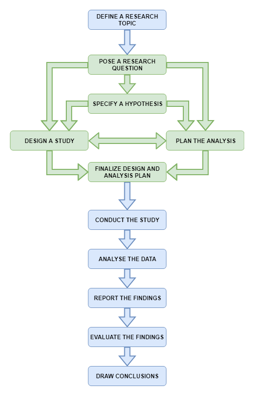

Measurement
Data Analysis for Psychology in R 1
Tom Booth
Click for handout
Today
- Admin: Navigating LEARN & quizzes
- Research process
- Broad concepts and idea in measurement
- Levels of measurement
- Types of variable
- Begin to build our class .Rmd
Learning objectives
- Know the four typical levels of measurement discussed in psychology
- Know broad classification of data types
- Begin to build intuition about the interaction between measurement, data types and information.
Research process
- Last week I showed you this…

Research process cont.

- I know this is too small to read, on LEARN is a full-sized image.
Asking questions
- When we ask research questions, we ask about phenomena.
- But we cant answer these questions unless we measure the phenomena/construct
- Measurement is a huge philosophical topic in psychology, which we will not attempt to broach in detail.
- However, a few concepts are useful.
Concepts in measurement

The many faces of data
- There are a huge amount of ways we can measure things.
- and our measurement gives rise to data.
- (this course would be very short if we did not have data)
- Dependent on our measurement choices, data can look quite different.
- And have different properties.
- There exist a few different schemes for characterising data.
Levels of measurement
- Terms coined by Stevens (1946), and we are still using them!
- 4 levels are general discussed (though also critiqued - see additional reading):
- Nominal
- Ordinal
- Interval
- Ratio
- With each level, the numeric values we apply hold different meanings, and we are able to do more with the values.
Summary

Types of data
- Categorical: Variables with a discrete number of response options.
- Binary data is a special case with only 2 possible values.
- Continuous: Variables which can take any real number value within the specified range of measurement.
- Count: Variables which can only take non-negative integer values (0,1,2,3 etc.).
Data types and R
| R Data Type | Example | Level of Measurement | Data Type |
|---|---|---|---|
| Numeric | Reaction Time | Ratio | Continuous |
| Logial | X > Y | Nominal | Categorical |
| Character | Names | Nominal | Categorical |
| Factor | Country of Birth | Nominal | Categorical |
| Ordered factor | Likert scale | Ordinal | Categorical |
| List | Anything! | NA | NA |
- Levels here refer to the examples. For example, other examples of numeric data may be interval or count.
Measurement matters
- Data is information.
- Psych 1A example of height.
- Measure 1: Taller or shorter than me.
- Measure 2: Ordered groups by randomly chosen people.
- Measure 3: Rank order everyone
- Measure 4: Tape measure
Data classifications matter
- The way we describe, visualize and analyse data depends on the type of data we have.
Let’s build a class .rmd
- Over the whole course, we are going to build up a single Rmarkdown file.
- We will use to practice, as a class, things you will do in smaller groups in labs.
- We will live code it (so likely make mistakes)
- This happens all the time, nothing to worry about.
- We will fix problems
- We will explore the data we create
Tasks for this week…
- Finish any existing tasks from lab 1.
- Reading: Linked at the top of lab 2.
- Additional reading on final slide.
- Quiz 2 (On course guide).
- Both live now.
- Close Sunday at 17:00
Recommendations of the week
- Podcast: In Our Time on Gauss + More or Less
- Recipe: Carrot, cougette and sweetcorn fritters
- Book: Flatland: A Romance of Many Dimensions, Edwin Abbott
- Thing to do: Arthurs Seat
- Coffee/food Place: Gaia, Leith Walk
- Best coffee in Edinburgh
Extra reading
- Michell, J. (1986). Measurement scales and statistics: A clash of paradigms. Psychological Bulletin, 100, 398-407. doi: 10.1037/0033-2909.100.3.398
- Stevens, S. S. (1946). On the Theory of Scales of Measurement". Science, 103, 677–680. doi:10.1126/science.103.2684.677.